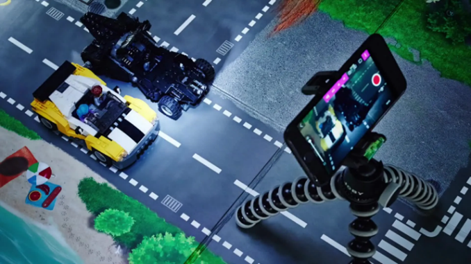
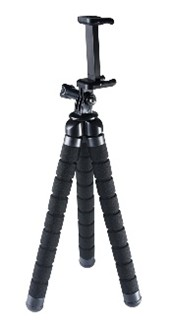
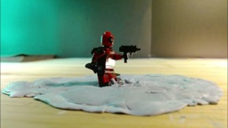
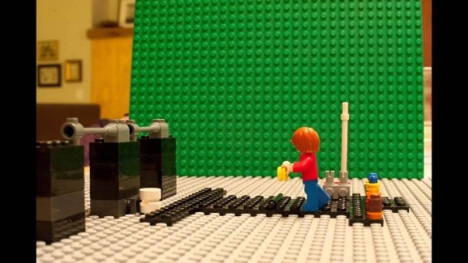

Materials

(p1) To get started, you are going to need a couple of things. There are only a few things that are actually required, which include Legos, a camera, and editing software. I want to touch on the most important materials to use when first starting out and give some tips on how to use them.

Tripod:
(p2) Some beginner stop-motion animators just prop up their phones against some Legos to film, but in order to minimize the shaking in the video as much as possible, a tripod is recommended. Luckily, there are some cheap tripod options to choose from. It’s important to choose a flexible leg tripod so you can keep it on the table and get the angles you want.
Putty:
(p3) You need to find a way to keep your sets still while you film, so using putty is recommended. This can also help with positioning the mini-figures exactly where you want them without them falling over.


Editing Software:
(p4) There are plenty of stop-motion apps you can use to put all your photos together, and you should look for one that works for you. I use Stop Motion Studio, which is free and works well. You can also use multiple editing software to handle different effects you want in your movie, like adding sound.